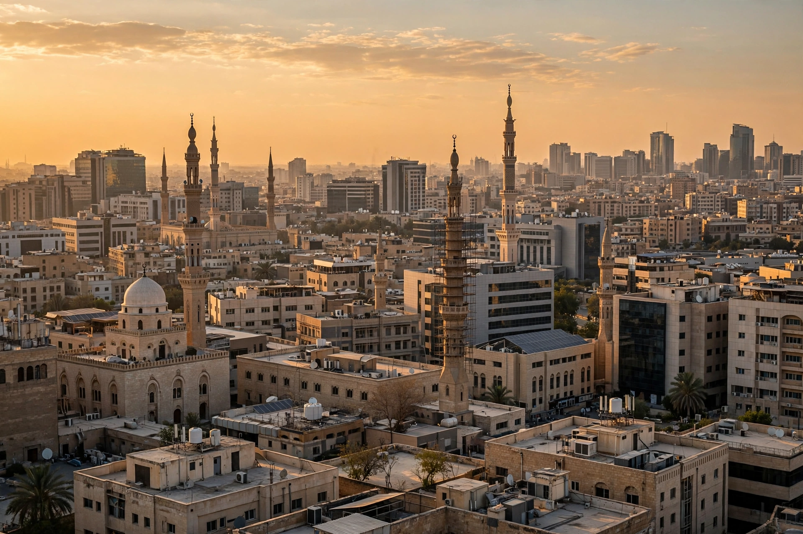

Top stories
Coverage centred on the Middle East and the Global South

Al Jazeera English leads with Middle East coverage — especially Gaza and Israel — alongside Africa, Asia and world news, features and opinion, reflecting its Doha base and its stated aim of giving a voice to the voiceless.
Middle East news
Live blogs and reporting on the Israel-Gaza war and regional politics.
Features and analysis
Long-form human-interest and explanatory reporting.